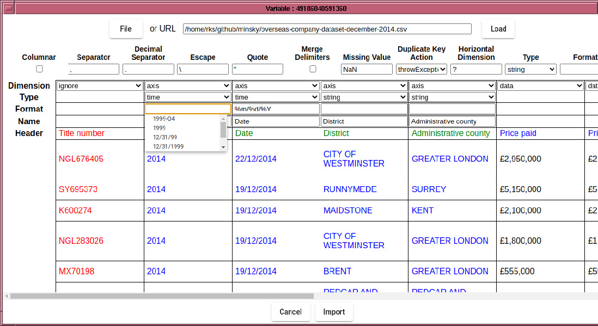
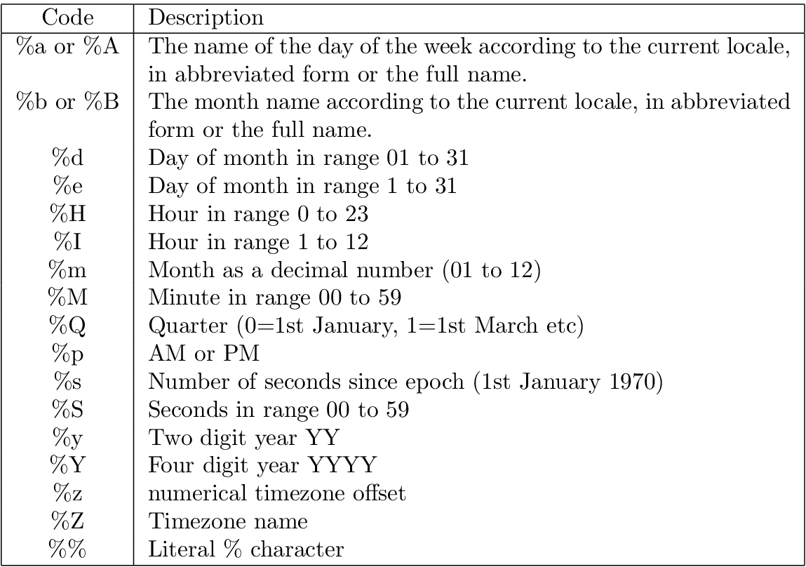

The Date column is currently parsed as strings, which not only will
be sorted incorrectly, but even if the data were in a YYYYMMDD format
which is sorted correctly, will not have a uniform temporal spacing.
It is therefore important to parse the Date column as temporal data,
which is achieved by changing the column type to ``time'', and specifying
a format string, which follows strftime conventions with the addition
of a quarter specifier (%Q).
If your temporal data is in the form Y*M*D*H*M*S, where * signifies any sequence of non-digit characters, and the year, month, day, hour minutes, second fields are regular integers in that order, then you can leave the format string blank . If some of the fields are missing, eg minutes and seconds, then they will be filled in with sensible defaults.

Table 4.1:
Table of strftime codes

A Strftime formatted string consists of escape codes (with
leading % characters). All other characters are treated as matching
literally the characters of the input. So to match a date string of
the format YYYY-MM-DD HH:MM:SS+ZZ (ISO format), use a format string
``%Y-%m-%d %H:%M:%S+%Z''. Similarly, for quarterly data
expressed like 1972-Q1, use ``%Y-Q%Q''. Note that only %Y
and %y can be mixed with %Q (nothing else makes sense anyway).
Note that if your month data uses month names instead of numerical month representation, then it is important you select %d or %e depending on whether your day data has leading zeros or not. This is unfortunately a restriction of the underlying date import routine, which may change in the future.